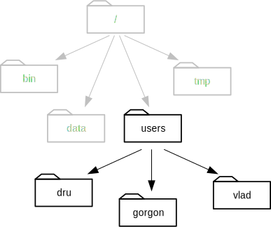

Files and Directories
Objectives
- Explain the similarities and differences between a file and a directory.
- Translate an absolute path into a relative path and vice versa.
- Construct absolute and relative paths that identify specific files and directories.
- Explain the steps in the shell's read-run-print cycle.
- Identify the actual command, flags, and filenames in a command-line call.
- Demonstrate the use of tab completion, and explain its advantages.
The part of the operating system responsible for managing files and directories is called the file system. It organizes our data into files, which hold information, and directories (also called "folders"), which hold files or other directories.
Several commands are frequently used to create, inspect, rename, and delete files and directories. To start exploring them, let's open a shell window:
$
The dollar sign is a prompt, which shows us that the shell is waiting for input; your shell may show something more elaborate.
Type the command whoami,
then press the Enter key (sometimes marked Return) to send the command to the shell.
The command's output is the ID of the current user,
i.e.,
it shows us who the shell thinks we are:
$ whoami
vlad
More specifically, when we type whoami the shell:
- finds a program called
whoami, - runs that program,
- displays that program's output, then
- displays a new prompt to tell us that it's ready for more commands.
Next,
let's find out where we are by running a command called pwd
(which stands for "print working directory").
At any moment,
our current working directory
is our current default directory,
i.e.,
the directory that the computer assumes we want to run commands in
unless we explicitly specify something else.
Here,
the computer's response is /users/vlad,
which is Vlad's home directory:
$ pwd
/users/vlad
Alphabet Soup
If the command to find out who we are is
whoami, the command to find out where we are ought to be calledwhereami, so why is itpwdinstead? The usual answer is that in the early 1970s, when Unix was first being developed, every keystroke counted: the devices of the day were slow, and backspacing on a teletype was so painful that cutting the number of keystrokes in order to cut the number of typing mistakes was actually a win for usability. The reality is that commands were added to Unix one by one, without any master plan, by people who were immersed in its jargon. The result is as inconsistent as the roolz uv Inglish speling, but we're stuck with it now.
To understand what a "home directory" is,
let's have a look at how the file system as a whole is organized.
At the top is the root directory
that holds everything else.
We refer to it using a slash character / on its own;
this is the leading slash in /users/vlad.
Inside that directory are several other directories:
bin (which is where some built-in programs are stored),
data (for miscellaneous data files),
users (where users' personal directories are located),
tmp (for temporary files that don't need to be stored long-term),
and so on:
We know that our current working directory /users/vlad is stored inside /users
because /users is the first part of its name.
Similarly,
we know that /users is stored inside the root directory /
because its name begins with /.
Underneath /users,
we find one directory for each user with an account on this machine.
The Mummy's files are stored in /users/imhotep,
Wolfman's in /users/larry,
and ours in /users/vlad,
which is why vlad is the last part of the directory's name.

Notice that there are two meanings for the
/character. When it appears at the front of a file or directory name, it refers to the root directory. When it appears inside a name, it's just a separator.
Let's see what's in Vlad's home directory by running ls,
which stands for "listing":
$ ls
bin data mail music
notes.txt papers pizza.cfg solar
solar.pdf swc
ls prints the names of the files and directories in the current directory in alphabetical order,
arranged neatly into columns.
We can make its output more comprehensible by using the flag -F,
which tells ls to add a trailing / to the names of directories:
$ ls -F
bin/ data/ mail/ music/
notes.txt papers/ pizza.cfg solar/
solar.pdf swc/
Here,
we can see that /users/vlad contains seven sub-directories.
The names that don't have trailing slashes,
like notes.txt, pizza.cfg, and solar.pdf,
are plain old files.
And note that there is a space between ls and -F:
without it,
the shell thinks we're trying to run a command called ls-F,
which doesn't exist.
What's In A Name?
You may have noticed that all of Vlad's files' names are "something dot something". This is just a convention: we can call a file
mythesisor almost anything else we want. However, most people use two-part names most of the time to help them (and their programs) tell different kinds of files apart. The second part of such a name is called the filename extension, and indicates what type of data the file holds:.txtsignals a plain text file,.cfgis a configuration file full of parameters for some program or other, and so on.This is just a convention, albeit an important one. Files contain bytes: it's up to us and our programs to interpret those bytes according to the rules for PDF documents, images, and so on.
Naming a PNG image of a whale as
whale.mp3doesn't somehow magically turn it into a recording of whalesong, though it might cause the operating system to try to open it with a music player when someone double-clicks it.
Now let's take a look at what's in Vlad's data directory by running ls -F data,
i.e.,
the command ls with the arguments -F and data.
The second argument—the one without a leading dash—tells ls that
we want a listing of something other than our current working directory:
$ ls -F data
amino-acids.txt elements/ morse.txt
pdb/ planets.txt sunspot.txt
The output shows us that there are four text files and two sub-sub-directories. Organizing things hierarchically in this way helps us keep track of our work: it's possible to put hundreds of files in our home directory, just as it's possible to pile hundreds of printed papers on our desk, but it's a self-defeating strategy.
Notice, by the way that we spelled the directory name data.
It doesn't have a trailing slash:
that's added to directory names by ls when we use the -F flag to help us tell things apart.
And it doesn't begin with a slash because it's a relative path,
i.e., it tells ls how to find something from where we are,
rather than from the root of the file system.
Parameters vs. Arguments
According to Wikipedia, the terms argument and parameter mean slightly different things. In practice, however, most people use them interchangeably or inconsistently, so we will too.
If we run ls -F /data (with a leading slash) we get a different answer,
because /data is an absolute path:
$ ls -F /data
access.log backup/ hardware.cfg
network.cfg
The leading / tells the computer to follow the path from the root of the filesystem,
so it always refers to exactly one directory,
no matter where we are when we run the command.
What if we want to change our current working directory?
Before we do this,
pwd shows us that we're in /users/vlad,
and ls without any arguments shows us that directory's contents:
$ pwd
/users/vlad
$ ls
bin/ data/ mail/ music/
notes.txt papers/ pizza.cfg solar/
solar.pdf swc/
We can use cd followed by a directory name to change our working directory.
cd stands for "change directory",
which is a bit misleading:
the command doesn't change the directory,
it changes the shell's idea of what directory we are in.
$ cd data
cd doesn't print anything,
but if we run pwd after it, we can see that we are now in /users/vlad/data.
If we run ls without arguments now,
it lists the contents of /users/vlad/data,
because that's where we now are:
$ pwd
/users/vlad/data
$ ls
amino-acids.txt elements/ morse.txt
pdb/ planets.txt sunspot.txt
We now know how to go down the directory tree: how do we go up? We could use an absolute path:
$ cd /users/vlad
but it's almost always simpler to use cd .. to go up one level:
$ pwd
/users/vlad/data
$ cd ..
.. is a special directory name meaning
"the directory containing this one",
or more succinctly,
the parent of the current directory.
Sure enough,
if we run pwd after running cd .., we're back in /users/vlad:
$ pwd
/users/vlad
The special directory .. doesn't usually show up when we run ls.
If we want to display it, we can give ls the -a flag:
$ ls -F -a
./ ../ bin/ data/
mail/ music/ notes.txt papers/
pizza.cfg solar/ solar.pdf swc/
-a stands for "show all";
it forces ls to show us file and directory names that begin with .,
such as .. (which, if we're in /users/vlad, refers to the /users directory).
As you can see,
it also displays another special directory that's just called .,
which means "the current working directory".
It may seem redundant to have a name for it,
but we'll see some uses for it soon.
Orthogonality
The special names
.and..don't belong tols; they are interpreted the same way by every program. For example, if we are in/users/vlad/data, the commandls ..will give us a listing of/users/vlad. When the meanings of the parts are the same no matter how they're combined, programmers say they are orthogonal: Orthogonal systems tend to be easier for people to learn because there are fewer special cases and exceptions to keep track of.
Nelle's Pipeline: Organizing Files
Knowing just this much about files and directories,
Nelle is ready to organize the files that the protein assay machine will create.
First,
she creates a directory called north-pacific-gyre
(to remind herself where the data came from).
Inside that,
she creates a directory called 2012-07-03,
which is the date she started processing the samples.
She used to use names like conference-paper and revised-results,
but she found them hard to understand after a couple of years.
(The final straw was when she found herself creating
a directory called revised-revised-results-3.)
Nelle names her directories "year-month-day", with leading zeroes for months and days, because the shell displays file and directory names in alphabetical order. If she used month names, December would come before July; if she didn't use leading zeroes, November ('11') would come before July ('7').
Each of her physical samples is labelled according to her lab's convention
with a unique ten-character ID,
such as "NENE01729A".
This is what she used in her collection log
to record the location, time, depth, and other characteristics of the sample,
so she decides to use it as part of each data file's name.
Since the assay machine's output is plain text,
she will call her files NENE01729A.txt, NENE01812A.txt, and so on.
All 1520 files will go into the same directory.
If she is in her home directory, Nelle can see what files she has using the command:
$ ls north-pacific-gyre/2012-07-03/
This is a lot to type, but she can let the shell do most of the work. If she types:
$ ls no
and then presses tab, the shell automatically completes the directory name for her:
$ ls north-pacific-gyre/
If she presses tab again,
Bash will add 2012-07-03/ to the command,
since it's the only possible completion.
Pressing tab again does nothing,
since there are 1520 possibilities;
pressing tab twice brings up a list of all the files,
and so on.
This is called tab completion,
and we will see it in many other tools as we go on.
Key Points
- The file system is responsible for managing information on the disk.
- Information is stored in files, which are stored in directories (folders).
- Directories can also store other directories, which forms a directory tree.
/on its own is the root directory of the whole filesystem.- A relative path specifies a location starting from the current location.
- An absolute path specifies a location from the root of the filesystem.
- Directory names in a path are separated with '/' on Unix, but '\' on Windows.
- '..' means "the directory above the current one"; '.' on its own means "the current directory".
- Most files' names are
something.extension. The extension isn't required, and doesn't guarantee anything, but is normally used to indicate the type of data in the file. - Most commands take options (flags) which begin with a '-'.

If pwd displays /users/thing, what will ls ../backup display?
1. ../backup: No such file or directory
2. 2012-12-01 2013-01-08 2013-01-27
3. 2012-12-01/ 2013-01-08/ 2013-01-27/
4. original pnas_final pnas_sub
If pwd displays /users/backup,
and -r tells ls to display things in reverse order,
what command will display:
pnas-sub/ pnas-final/ original/
ls pwdls -r -Fls -r -F /users/backup- Either #2 or #3 above, but not #1.
What does the command cd without a directory name do?
1. It has no effect.
2. It changes the working directory to /.
3. It changes the working directory to the user's home directory.
4. It produces an error message.
What does the command ls do when used with the -s and -h arguments?